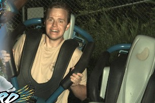
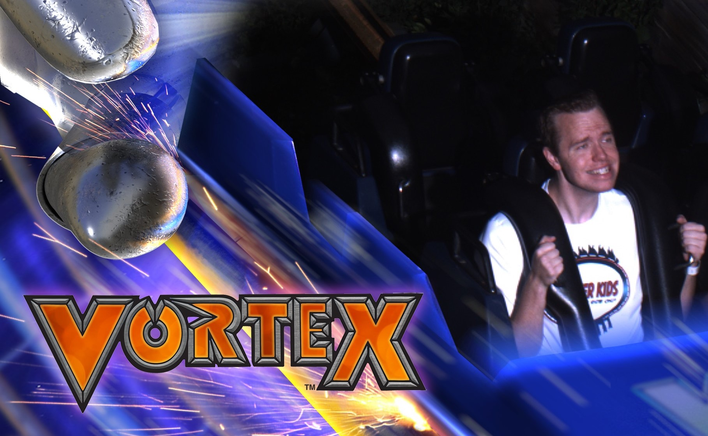
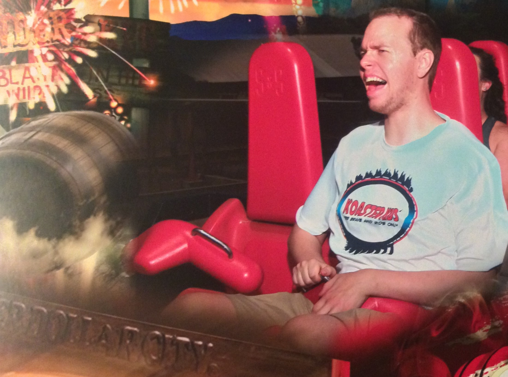
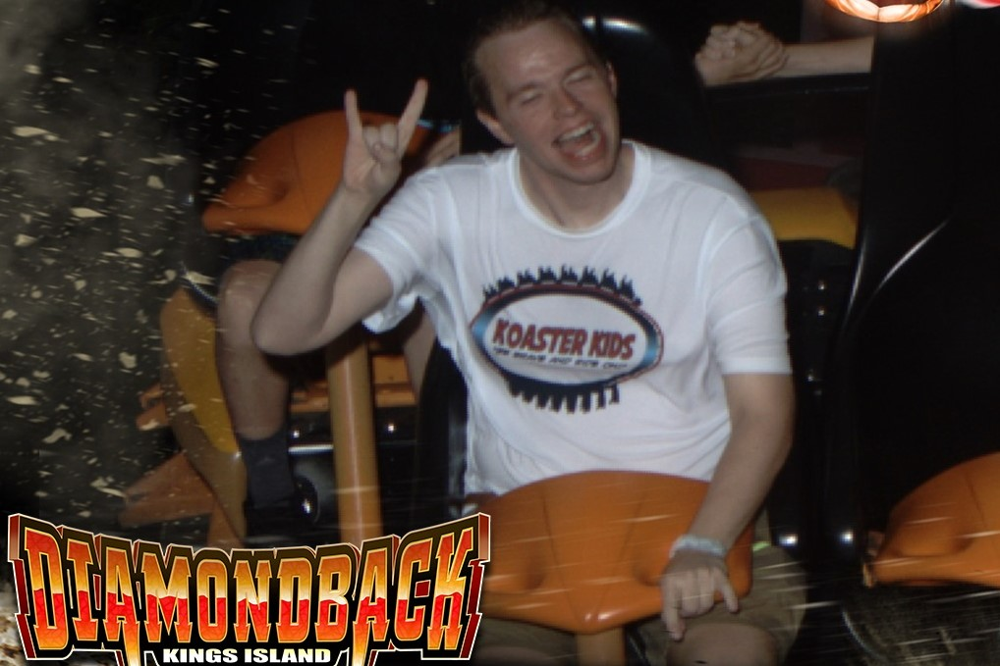
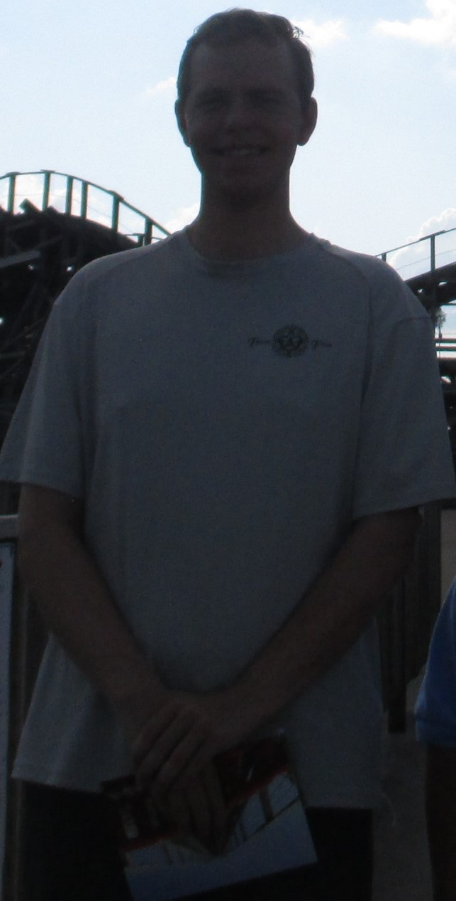
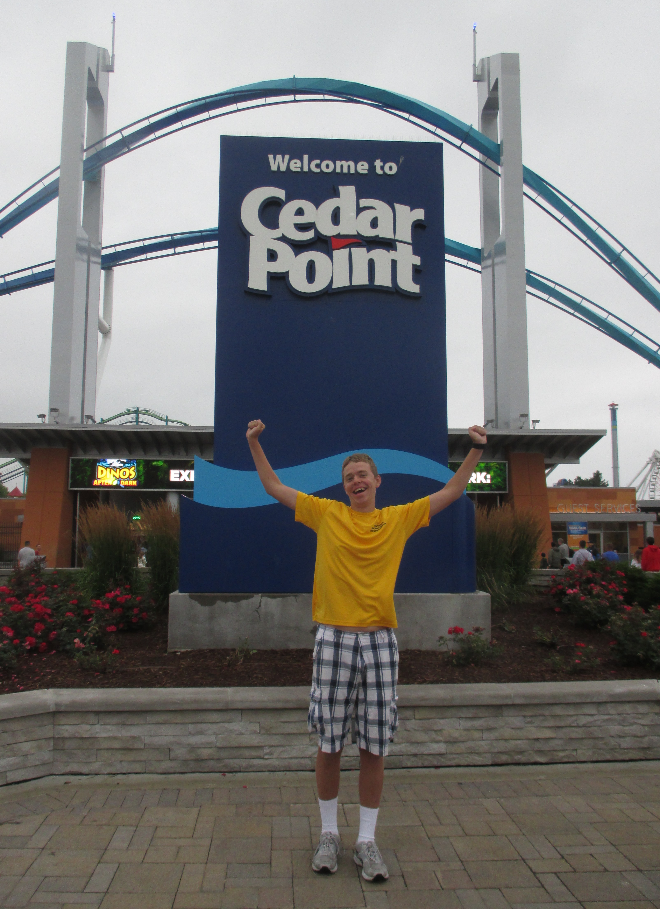
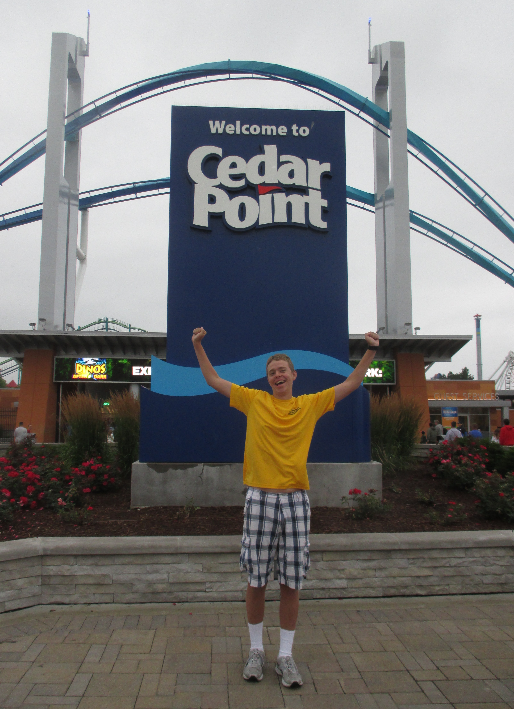

Meet The Man Who's The Man Behind It All
Allow me to properly introduce myself. My name is David Sharpe and I am the host and creator of the Coaster Scouts YouTube Channel. I'd like to share with you some more information about myself to help you know how roller coasters and the Coaster Scouts YouTube Channel has impacted my life.
My Expereinces with Autism
When I was very young, I was diagnosed with autism, a social and emotional disorder that made it difficult for me to talk, interact, or socialize with other people. When my parents recieved my diagnosis, they worked with me to train myself how to properly socialize with other people. I would spend a potion of everyday learning social skills from one on one interactions with a private speech therapist who would consistantly work with me within my family's household so that I could learn how to maintain eye contact, how to read facial exressions so that I knew how a person was feeling, knowing the propler time to step into a conversation, recognise when people don't want to talk with you, and many other skills that I needed to learn. Moreover, I would often go to the University of Missouri's Thompson Center to revieve additional social training and check up on my abilities to socialize with others on a regular basis. In fact, the Thompson Center will survey me once in a while to help them understand my expereince with autism and help others who also have autism. Today, I socialize as well as a person who doesn't have autism. In fact, those who have learned or known that I have autism can hardly tell that I have autism.
My Expereince with Fear and How I Overcame It
However, my time training and learning how to socialize with other people was also a time when fear completely controlled my life. Any type of activity, event, or excursion outside of my comfort
zone was met with extreme resistance and I never dared more a muscle if I were to go into a place that I wasn't comfotable for me to go into. I remember on time when I was downstairs of one of the
University Missouri buildings and was so scared about what was on the next floor that I paniced and cried saying to my therapist that I don't want to go up there.
This fundamental deer in the
headlights feeling controlled me for years until one fateful day in the summer of 2013. My family and I were on a family vacation and had plans to visit an amusement park called Worlds of Fun
for a day. Before we went into the park, my mother turned back to me and my brother and said you are going to ride a roller coaster before we leave today.
This statement put myself into a full
panic and I wasn't ready to try something as scary as riding a roller coaster. Fortunately, my mother allowed me to choose whichever roller coaster I needed to ride that day and so I decided to ride
a wooden roller coaster called Timber Wolf.
While I was in line for the ride, my nerves were at peak anxiousness as I was physically shaking in fear when I saw the coaster's lift hill and as I
got closer and closer to boarding the coaster's train. As me and my brother boarded the Timber Wolf coaster train, I knew there was no going back, I had to see this through. As we rolled out of the
station and rode around Tomber Wolf's ride layout, I actually found joy in riding Tomber Wolf rather than being afraid of it. It was as if my wall of fear was shattered and all that was left was nothing
but pure joy. As I got off of Timber Wolf and met back with my mother, I told her how much fun I had riding Timber Wolf. That was great for my mother ot hear because he made me ride another roller coaster
after that. With Timber Wolf finished, I decided to ride their second wooden roller coaster named Prowler
and ever since that expereince, I've never let fear control my life ever again.
What I'm Doing Today
Fast forward to today, I've been riding as many roller coasters as I can. I regularly visit the amusement parks of Six Flags St. Louis, Worlds of Fun, and Silver Dollar City multiple times througout the year, but I'm also looking to go to at least one new park each year to see new things and expereince new expereinces.
This curiousity has lead me to visit the amsusement parks of Cedar Point, Kings Island, Kentucky Kingdom, Beech Bend, and Holiday World. All of these amusment parks are great places to visit and I highly recommend you to visit them when you have the chance. However, I intend to visit more amusement parks in the future because I want to expereince new rides, places, and parks that I've never been
to before. Yet I'm also willing to revisit parks like Kentucky Kingdom, Holiday World, and Kings Island when I get the chance to recapture the fun and excitement I had at those amusment parks. I'm also a member of The American Coaster Enthusiasts.
I've been a member of their Heart of America
group for over a year now and I'm grateful to find and
interact with people who share a passion for roller coasters as much as I do. This connection between myself and other fellow coaster enthusiasts is reinforced with my personal coaster enthusiast YouTube Channel Coaster Scouts. In short, Coaster Scouts has been my means of sharing my enthusiasm for roller coasters by encouraging others to develop courage and build a community with fellow coaster enthusiasts. I do my best to upload videos regularly, but somethimes there's obstacles that I need to encounter with before I can make a video. You can learn more about the videos I make in the Archives section titled Channel Videos.
Accomplishments
Here are some accomplishments I've been able to achieve throguhout my lifetime.
Non-Channel Accomplishments Channel Accomplishments
- Eagle Scout - April 2013
- Golden Cow Lip Sync Champion - February 2015
- 100 Subscribers - September 2018
- 10,000 views - November 2018
 
